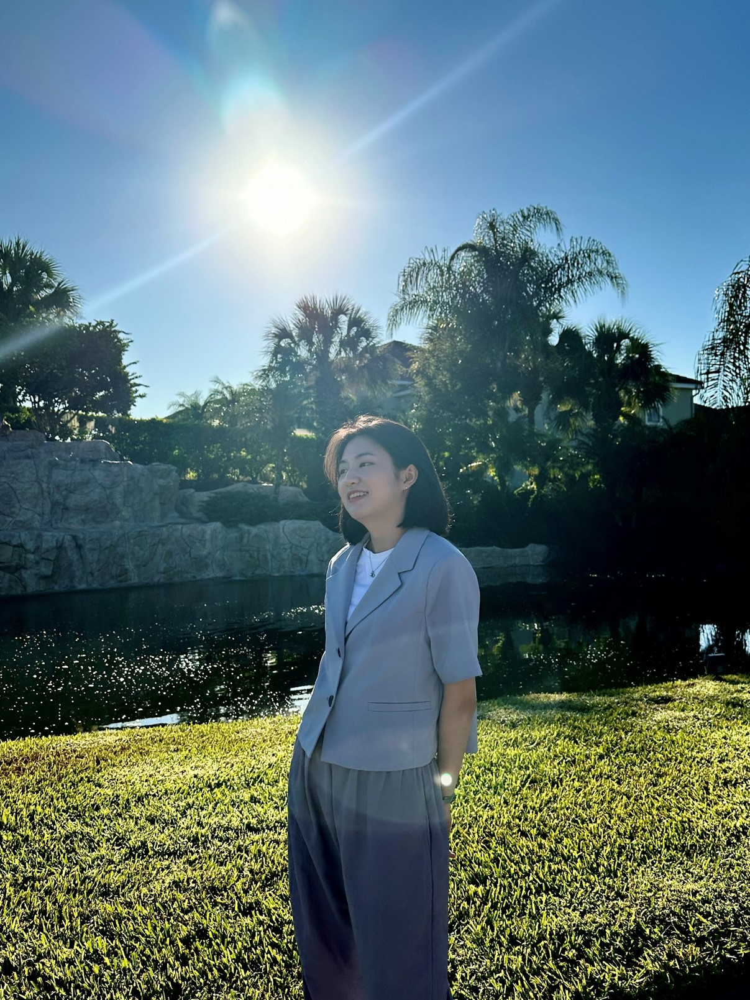

!Welcome to my Website!

Information about me
Name : Dahee Kim
Where do I live : Seoul, Republic of Korea
School : Hansung University
Major : Computer Science
Graduation : 2025 expected
Hello, My name is Dahee Kim.
I'm living in Seoul currently taking bachelor's degree program in Hansung University.
I'm expecting to graduate in June, 2025.
I have a experience of studying abroad at Northeatsern Illinois University in USA for a year from 2023 to 2024.
I took Modern Database Management, Artificial Intelligence, Server Side Web Programming and Event-Driven Programming in Computer Science department.
As elective classes I took following 4 classes for various reasons:
Music Theories: I wanted to know more about music theories in general because once I thought about making an AI that categories music genre and makes recommendation to people.
Public Speaking: I took this class to overcome my anxiety about making public speech.
Disability Studies: My final goal in this field is developing a technology that can help marginalized people in society. To reach that goal I felt the need to know more about marginalized group, and ended up taking this class.
Intro to Communication: Knowing communication skills are important in anywhere but it is especially important in this field where most of works are done as group.
My Job Experience
2022.02 - 2022.08
I worked part time job at Pizza hut for 6 months.
It is very small job but during this I dealt with lots of workers and costomers.
As I worked mainly as a server I learned how to be communicational bridege between costomers and other workers.
2023.03 - 2023.07, 2024.09 - 2024.01
I worked as a teaching assistant at Hansung University classes for 2 semesters.
I managed 2 courses, Intro to Web Programming and Computer Programming.
At Intro to Web Programming they taught basic knowledge of HTML, CSS and JavaScript and Computer Programming was about basic of C.
I got assigned 80 students to take questions.
Most of my work was attending classes and helping people doing their assigned project of the week.
With this job, I could learn how to convey code information to beginner programmers more effectively and easily and review own basic knowledges.